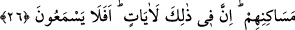

9- Allâh’ın affı ve cömertliği sebebiyle. Çünkü Allah Teâlâ çok affedicidir, affı sever.
Kulun sayfasında bir günah görse onu affetmeyi sever. O çok cömerttir, kulunu
bağışlamak ve ondan râzı olmakla ona cömertlikte bulunmayı sever.
10- Allah Teâlâ kullarını sırlarının hazîneleri kılmıştır. Bu itibarla, kullarının hâlini
en iyi bilen ve değerini de en iyi tanıyan O’dur. Onların çamurunu kırk sabah kudret
eliyle yoğurmuş ve onları bütün sıfatlarının üzerlerinde tezâhür ettiği aynalar hâline
getirmiştir. Böyle bir tecellî bir başka varlıkta, hattâ mukarreb meleklerde bile ortaya
çıkmamıştır. Görmez misin ki Allah Teâlâ: “Ben yeryüzünde bir halîfe yaratacağım”
buyurunca melekler “Sen orada fesat çıkaracak ve kan dökecek birini mi halîfe
kılacaksın?” dediler. İnsanları hakkıyla tanıyamadılar. Nihâyet Allah Teâlâ onların
izzet ve şerefini ifâde için meleklere hitâben şöyle buyurdu: Onların fazîletlerinden ve
şemâilinden/husûsiyetlerinden “Sizin bilemeyeceğiniz şeyleri ben bilirim!” (el-
Bakara, 2/30). Çünkü onlar benim sırlarımın hazîneleri, cemâl ve celâlimin aynasıdır.
Siz onlara kıskançlık gözüyle bakıyorsunuz. Ben ise onlara muhabbet ve rahmet
nazarıyla bakıyorum. Bu itibarla siz yalnız onlardaki her türlü kusuru ve çirkinliği
görüyorsunuz. Ben ise ancak onlardaki her türlü güzelliği görüyorum. Bu yüzden sizi
onlar arasında hüküm verici kılmaya asla râzı değilim. Bu sebeple de onların aralarında
-ihtilâf ettikleri konular hakkında- fazl ve ikramımla hükmü ancak ben vereceğim.
Onların iyilerine ihsan ve ikrâmla, kötülerine ise af ve mağfiretle muâmele edeceğim.
Onların hâlini en iyi ben bildiğim için, ihtilâf içinde olmaları bana büyük görünmez.
Çünkü “onlar ihtilafa düşmeye devam edecekler. Ancak Rabbinin merhamet
ettikleri müstesnâdır. Zaten Rabbin onları bunun için yarattı.” (Hûd, 11/118-119).
Akıl sâhibine gereken, ihtilâfı aradan kaldırmak ve ayrılığa düşmemektir. Çünkü
Allah Teâlâ, Kur’ân’ın hidâyeti ile Hakk’a yakınlık yolunu göstermiştir. Fakat sarp
yokuşları aşma konusunda ittifaktan/birlik ve beraberlikten saptılar. Allâh’ım merhamet
et! Çünkü bol bol ikrâm eden, en cömert olan Sensin Sen!
26. Halen yurtlarında gezip dolaştıkları kendilerinden önceki nice nesilleri helâk
edişimiz onları doğru yola sevk etmedi mi? Bunlarda elbette ibretler vardır. Hâlâ
kulak vermezler mi?
“Halen yurtlarında gezip dolaştıkları” Mekke halkı, ticâret seferlerinde helâk
olanların yurtlarına ve beldelerine uğradıkları, helâk edildiklerinin izlerini ve evlerinin
harâbelerini gördükleri “kendilerinden önceki” Âd, Semûd ve Lût kavmi gibi “nice”
pek çok “nesilleri helâk edişimiz onları doğru yola sevk etmedi mi?” Yâni onlar gâfil
oldular/bilemediler ve onların işlerinin sonu kendilerine belli olmadı mı?
Bu âyet, Mekke kâfirlerini korkutmak üzere inmiştir.